Too many windows
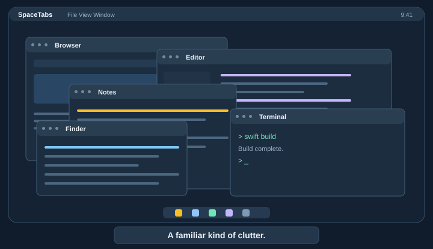
“I’d like a more organized desktop.”
Overlapping windows slide in. Pause briefly on the clutter, then introduce the thought.
A 70-second outline using simple app windows, colored zones, tab bars, cursor cues, and keyboard cards. Based on the illustration already used in the repository.

“I’d like a more organized desktop.”
Overlapping windows slide in. Pause briefly on the clutter, then introduce the thought.
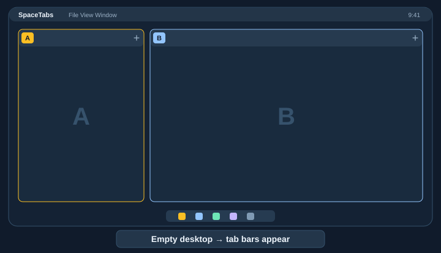
“A place for every window.”
Fade to an empty desktop. Reveal only the two tab bars; no app windows are assigned yet.
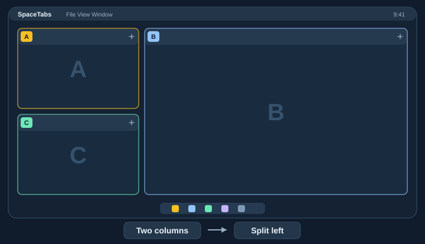
“Arrange it your way.”
Morph Two columns into Split left. Keep the camera still; show A and C beside the larger B.
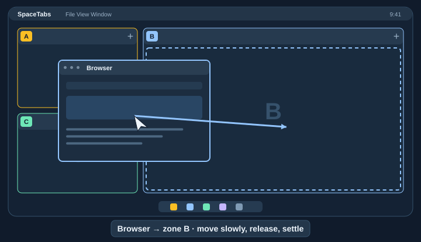
“Your browser, right here.”
Slowly Control + right-drag Browser into B. Show the preview outline, release, then settle into place.
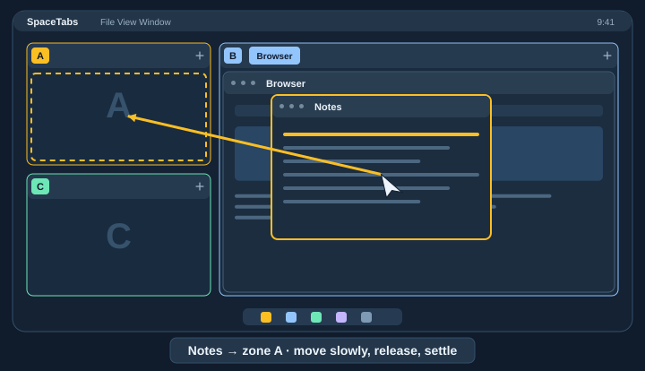
“Your notes, beside your work.”
Repeat slowly with Notes into A. Leave Browser in B so the independence is already clear.
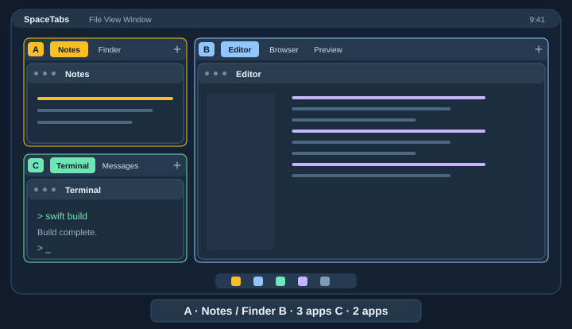
“More apps. The same clear desktop.”
Speed up: Editor and Preview join B, Finder joins A, Terminal and Messages join C. Tabs accumulate.
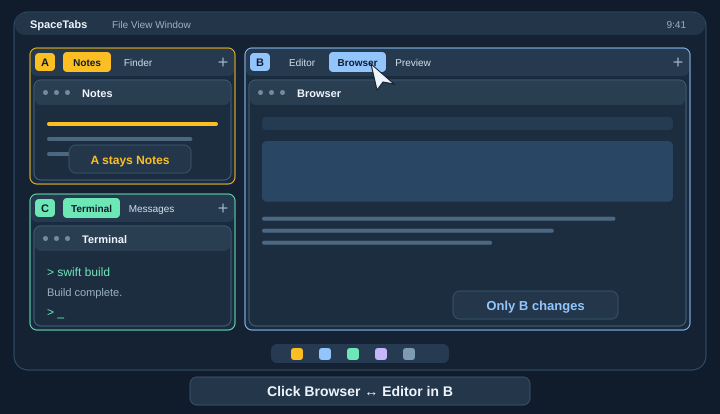
“Change one space. Keep the rest.”
Click Browser in B, then Editor. Only B changes; Notes in A and Terminal in C stay selected.
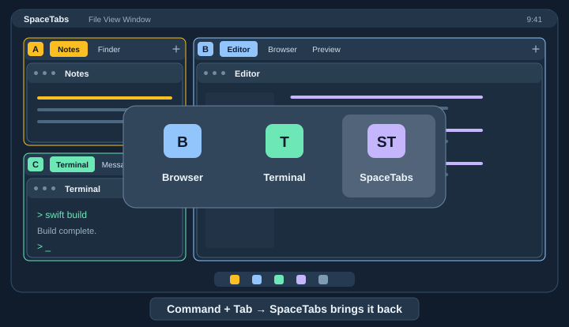
“Your usual app switching still works.”
Use Command-Tab normally, then choose SpaceTabs to restore the selected workspace. Settings stays closed for this shot.
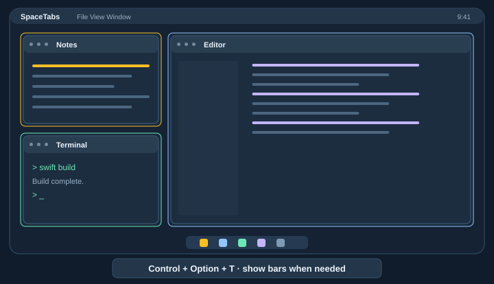
“Prefer your tab bars out of sight?”
With auto-hide enabled, fade the bars out and let windows fill their zones. Control + Option + T briefly reveals the bars.
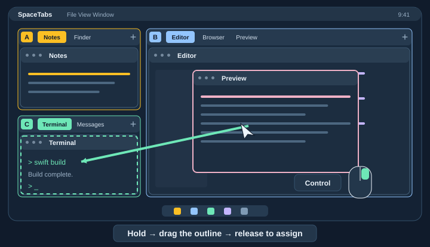
“Hold Control. Right-drag. Drop.”
Show the modifier and right mouse button. A ghost outline follows Preview to C; the real window moves only on release.
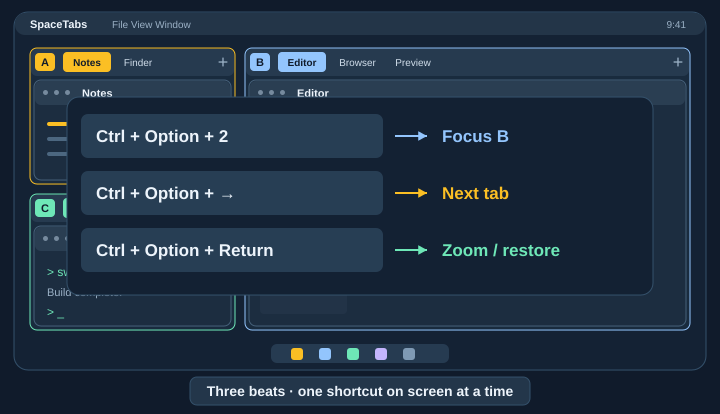
“Less reaching. More doing.”
Three short beats: focus B, switch its tab, then zoom and restore the focused window. Show one key combination at a time.
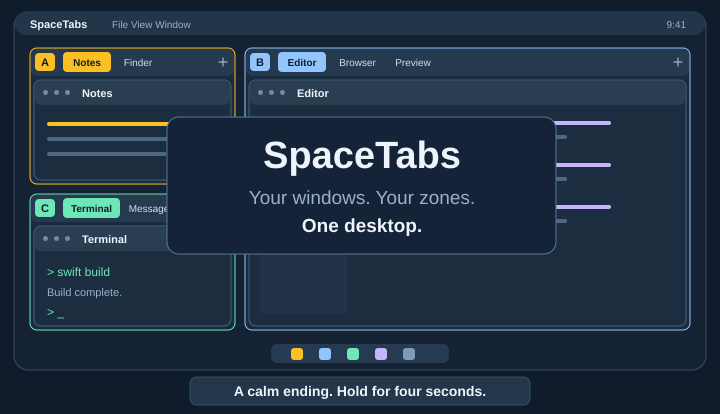
“Your windows. Your zones. One desktop.”
Return to the finished workspace. Hold the SpaceTabs name and tagline for the final four seconds.
A · orangeB · blueC · green The zone colors stay consistent throughout. App windows use a small set of simple content shapes so a change is readable immediately. Treat the opening as a thought: “I’d like a more organized desktop.”
Keep one fixed desktop view for continuity. The first two assignments are deliberately slow. Build up the remaining tabs quickly, pause again to demonstrate switching, then finish with three concise keyboard actions. In shot 11, the three rows are planning notes: the video shows one combination at a time.
Every tab represents a real app window. Inactive windows remain open. “Show Tabs” reveals the bars; it is not a hide toggle. Auto-hide must be enabled for shot 09. Control + right-drag is optional and must be enabled for the gesture shots. Its preview is an outline; the real window moves only on a valid release. Release Control first to cancel. Shortcuts shown are the defaults; a user may customize them.
“Two columns” and “Split left” describe layouts. A, B, and C label zones, not template names. This is a schematic visual proposal, not a pixel-exact representation of the app. The first assignment uses the same supported gesture explained later. Keep Settings closed during the workspace-restoration scene.